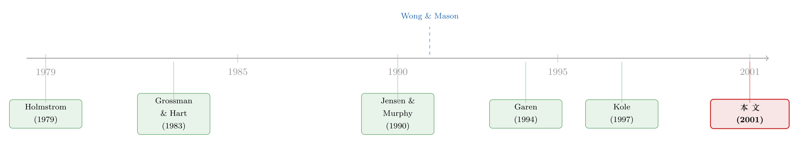

同一个行业里，每家公司的『工资—业绩』曲线都长得不一样
本文读的是 Hermalin & Wallace (2001, JFE)：当我们把一堆公司的「薪酬对业绩的敏感度」放进同一个回归里求一个平均系数时，得到的那个数字，很可能既不是任何一家公司的真实合约，也不是「典型」公司的合约——因为它是一个被各公司业绩方差扭曲过的加权平均。作者用一个随机系数（分层）模型，让每家储贷机构的「工资—业绩」曲线各自不同，并把这种不同的来源也一起估出来，从而第一次给「代理理论的次要预测」做了一次干净的检验。
1 引言：一个被「平均」掉的故事
代理理论 (agency theory) 给金融经济学留下的最著名的一句话，大概是：经理人的薪酬应该和公司业绩正相关。围绕这一句话，过去几十年里堆起了浩如烟海的实证文献（综述可见 Gibbons, 1997）——大家跑回归，看薪酬对股价、对资产回报率的系数是不是正的、是不是显著。
但如果你停下来想一想，会发现这件事有点奇怪：代理理论说的，远不止「正相关」这一句。它还告诉我们，最优合约长什么样、由什么决定——业绩信号越「吵」，激励应该越弱（还是越强？）；经理努力的边际收益越大，激励应该越强；公司面临的竞争结构不同，最优激励也会不同。换句话说，理论一开口就预言了：不同公司的「工资—业绩」曲线，斜率本就该不一样。
可几乎所有的实证研究，都把这后半句话忽略了。它们跑的是这样一个回归：把成百上千家公司的薪酬和业绩堆在一起，估一个斜率系数，然后看它正不正、显不显著。这等于偷偷假设了：所有公司用的是同一份激励合约。
一旦你承认各公司的合约系数本就不同，那个被估出来的「平均系数」就开始变得可疑了。它不是简单的算术平均，而是一个加权平均——而权重，恰恰取决于各公司业绩指标的方差。偏偏业绩方差本身，又是决定最优激励强度的因素之一。于是这个平均数，可能既不反映任何一家公司，也不反映「典型」公司。
这就是 Hermalin 和 Wallace 想讲的核心故事。它不是又一篇「我找到了一个新业绩指标、系数更显著」的论文；它要追问的是一件更底层的事：当公司本就异质，我们到底应该怎么去估这条「工资—业绩」关系？
围绕这一个问题，全文反复地讲，一路讲到底。
2 先看一眼「标准做法」给出的答案
要说清楚问题，得先把那个被批评的「标准回归」摆出来。文献里的典型设定是这样的：
$$ y_j = x_j' \beta + z_j' \gamma + e_j $$
这里 \(j\) 标记观测，\(y\) 是某种薪酬度量（比如薪酬的对数），\(x\) 是业绩指标向量（股价变化、资产回报率等），\(z\) 是其它控制变量（行业、公司规模等），\(e\) 是误差项。检验代理理论，就是去看业绩系数 \(\beta\) 是不是显著为正。
作者拿了 104 家公开交易的储贷机构（thrifts）、共 509 个「机构—年」的面板，跑了这个回归。被解释变量是 CEO 在「业绩被测量的次年」拿到的总薪酬的自然对数（薪水 + 奖金 + 期权的二项式估值——注意，把期权授予的价值也算进激励薪酬，这一点比这条文献里以往的做法要精细得多）。业绩滞后一期，理由有三：好业绩的一部分回报本就体现在未来加薪上、年内的奖金往往次年才发、滞后还能避开「好业绩抬高薪酬、而能给高薪的冲击又诱发好业绩」的联立内生性。
结果如下表：
| 自变量 | 系数估计（White 标准误） |
|---|---|
| 资产（Assets） | \(1.77\times10^{-9}\)（\(2.04\times10^{-9}\)） |
| 资产回报率（ROA） | \(1.44\times10^{-3}\)（\(0.292\)） |
| 股价年度百分比变化 | \(2.31\times10^{-3}{}^{***}\)（\(3.21\times10^{-4}\)） |
（\(R^2=0.82\)；机构固定效应联合检验 \(F_{106,402}=16.86^{***}\)。）
读这张表，结论似乎很「干净」：股价变化对薪酬有显著正向影响（系数 \(2.31\times10^{-3}\)，标准误 \(3.21\times10^{-4}\)，\(t\) 约 7.2，1% 水平显著），符合理论；而资产回报率（ROA）则完全不显著（\(1.44\times10^{-3}\)，标准误竟有 0.292）。
如果故事到此为止，你会得出一个标准的结论：储贷机构的 CEO 薪酬主要盯着股价，不太看 ROA。
但真正关键的一步在于追问：这个结论可信吗？
3 为什么「一个平均系数」会骗人
作者花了整整一节，从代理理论出发，论证为什么 Eq.(1) 这种设定本身就站不住。这里我把他们最锋利的两个论证拆给你看。
第一，系数本就该因公司而异。 设想两家公司 A 和 B。A 的需求极不稳定，于是它的利润是 CEO 努力的一个「很吵」的信号；B 的需求平稳，利润信号更干净。Holmstrom (1979) 的信息量原理告诉我们，激励应当更多地押在更有信息量的指标上——于是 A 和 B 在「薪酬—业绩」上的系数注定不同。（究竟谁的斜率更陡，理论上反而是不确定的：信号越吵，诱导同等努力的成本越高，会压低激励；但要诱导努力又必须用更陡、更冒险的薪酬表，这又会抬高斜率。两股力量相反，谁也压不倒谁。）更妙的是 Hermalin (1994) 的结果：即便两家公司一模一样，也可能在均衡里选择不同的激励合约——想想两个古诺竞争者，A 给 CEO 强激励去压成本，B 的最优回应恰恰是给自己 CEO 弱激励。异质性甚至不需要外生差异就能内生地长出来。
第二，也是全文的「定理级」论证：那个平均系数的权重是有毒的。 假设样本里有两类公司，真实关系是
$$ y = x \beta_i + e $$
其中 \(i\) 标记类型，且两类都有 \(E\{x\}=0\)。令 \(\sigma_i^2\) 为第 \(i\) 类的 \(x\) 方差。如果 \(\beta_1 \neq \beta_2\) 且 \(\sigma_1^2 > \sigma_2^2\)，那么 OLS 估出的系数会是
$$ \hat\beta \;\approx\; \frac{\sigma_1^2\,\beta_1 + \sigma_2^2\,\beta_2}{\sigma_1^2 + \sigma_2^2} $$
看清楚这个式子：因为 \(\sigma_1^2 > \sigma_2^2\)，估计值会离 \(\beta_1\) 更近、离 \(\beta_2\) 更远，也就是 \(\hat\beta \neq \tfrac{1}{2}\beta_1 + \tfrac{1}{2}\beta_2\)。它根本不是我们想要的「等权平均」（即假如能直接观测到每家公司的系数、再跨公司平均所得到的那个数）。
接着，一个更扎心的推论来了。回忆 Blackwell 意义下：一个指标信息量越低，它在二阶随机占优意义上就越「险」、方差越大。于是那些本就很少依赖某指标的公司，恰恰是该指标方差最高的公司。它们的系数因此在回归里获得了更大的权重。结论是 \(\hat\beta_1 < \tfrac12\beta_1\)、\(\hat\beta_2 < \tfrac12\beta_2\)——回归会系统性地低估真实的激励强度。
作者还给了一个极端但极有说服力的例子。假设一半行业用合约 \(y = \beta_1 x_1 + e\)，另一半用 \(y = \beta_2 x_2 + e\)（\(x_1, x_2\) 是两个不同的业绩指标）。你把两者塞进同一个回归 \(y = \beta_1 x_1 + \beta_2 x_2 + e\)，得到的大致是
$$ \hat\beta_1 = \tfrac{1}{2}\beta_1, \qquad \hat\beta_2 = \tfrac{1}{2}\beta_2 $$
——两个系数都被腰斩。于是反转出现了：你会得出「典型公司只是轻微地使用激励」的错误印象，可事实是每家公司都在重度使用激励，只不过它们各自押的指标不同。回到第 2 节那张表：ROA 不显著，到底是因为储贷机构真的不看 ROA，还是因为「看 ROA 的公司」和「看股价的公司」被混在一起、彼此抵消了？标准回归无力回答。
这恰恰呼应了公司治理实证里一个更普遍的教训：当个体异质性被错误地处理，固定效应或混合回归常常会把真实存在的关系「洗」得无影无踪（关于固定效应如何掩盖管理层持股与业绩的关系，可参见《横着看天差地别，竖着看几乎不动——固定效应为什么测不出持股与业绩》）。
4 关键的一步：把「系数」本身变成被解释变量
既然问题出在「强行给所有公司估一个系数」，那自然的修正方向就是：让系数因公司而异。但作者立刻指出，光让系数自由浮动还不够——如果理论能告诉我们这些系数由什么决定，那就该把这条信息用上，否则估计是低效的。
于是模型被改写成：对第 \(j\) 家公司，
$$ y_j = X_j \beta_j + e_j, \qquad e_j \sim N(0,\, \sigma_j^2 I_{n_j}) $$
这里 \(\beta_j\) 是一个 \(K\times 1\) 的系数向量，它在公司内部是平稳的，但跨公司随机变动。关键的第二层来了——这些系数本身，是一组外生异质性变量的函数。令 \(Z_j\) 为异质性变量构成的块对角矩阵，
$$ Z_j = \begin{pmatrix} z_{j1}^{*\prime} & 0 & 0 \\ 0 & \ddots & 0 \\ 0 & 0 & z_{jK}^{*\prime} \end{pmatrix} $$
其中 \(z_{jk}^{*}\) 是「假设决定第 \(k\) 个业绩指标权重」的那组变量。随机系数由下式生成：
$$ \beta_j = Z_j \delta + \xi_j, \qquad \xi_j \sim N(0,\, \Omega) $$
\(\delta\) 是固定的异质性系数向量，\(\Omega\) 是随机扰动的协方差矩阵。这两层并在一起，就得到一个分层模型（hierarchical / random-coefficients model）：
这个写法的妙处在于：对 \(\delta\) 的检验，就是对「异质性变量是否真的决定了激励合约」的检验——也就是代理理论那些「次要预测」第一次被正面拷问。同时，模型还能吐出每家公司自己的随机系数 \(\beta_j\) 及其标准误，于是我们可以直接为每一家储贷机构的「薪酬—业绩」关系做检验。
5 为什么不能用 OLS：相关性的诅咒
接着，一个自然的偷懒念头是：能不能像 Garen (1994) 那样，先对每家公司单独 OLS 估出 \(\hat\beta_j\)，再把这些 \(\hat\beta_j\) 当成被解释变量，做第二阶段回归去估 \(\delta\)？
作者说，不行。理由层层递进：单家公司的 OLS 只在「同期扰动 i.i.d.、且 \(\beta_j\) 是固定系数」时才合适；可一旦 Eq.(11) 成立，\(\beta_j\) 就是从一个总体分布里抽出来的随机系数，「固定系数」的前提自相矛盾。两阶段 OLS 还忽略了 \(\mathrm{Var}(y_j)\) 的方差成分结构（它同时由 \(e_j\) 和 \(\xi_j\) 决定），因此低效，且标准误会被向上偏（Amemiya, 1978; Hsiao, 1986）。
更致命的是直接对合并式 Eq.(13) 跑 OLS（等价于无约束极大似然）也不行，因为复合误差 \((e_j + X_j\xi_j)\) 一般会和自变量相关。唯一的例外是 \(E\{X_j\xi_j\}=0\)，但这个假设不能成立——道理很直觉：对 \(\beta_j\) 的一个正向冲击（合约给了更强激励）会通过激励机制推高业绩 \(X_j\)，负向冲击则压低业绩。于是缔约误差 \(\xi_j\) 和业绩 \(X_j\) 天然同向相关。这个相关性的后果，是把极大似然估出的 \(e_j\)、\(\xi_j\) 方差—协方差矩阵向下偏。
这正是标注卡片 a3 想强调的：\(X_j\xi_j\) 这一项，是整个识别问题的「震中」。承认它与 \(X_j\) 相关，OLS 与无约束 ML 就都失效了；而要绕开它，就得换一把更聪明的尺子。
那把尺子，就是受限极大似然（restricted maximum likelihood, REML）——它在估计 \(\delta\) 时扣除了相应损失的自由度（Laird & Ware, 1982），从而修正上面的偏误。具体而言，作者用 Wong and Mason (1991) 发展的一致估计量，去估固定效应向量 \(\delta\)、随机效应 \(Z_j\delta\)、扰动协方差矩阵 \(\Omega\) 的 \(K(K-1)/2\) 个独立元素，以及 \(J\) 个各自的误差方差 \(\sigma_1^2,\dots,\sigma_J^2\)，再由这些估计算出每家公司随机系数的后验均值与协方差。这类 Stein 式（收缩）估计量，在「把先验结构信息纳入估计」这件事上，被证明优于逐公司 OLS。
6 模型说了什么
把这套机器开动起来，作者得到了三组互相印证的结论：
其一，异质性是真实存在的，而且强。 「这些控制变量不重要」的原假设被轻易拒绝——这意味着，决定各公司合约系数的那组异质性变量（\(\delta\)）确实在起作用。注意这个检验的分量：作者特意把样本限定在单一行业（储贷业），本就是为了尽量压低公司间异质性、给自己的假设设一个更严苛的关卡；连在这样一个「同质」的行业里都能拒绝同质性，说明异质性的普遍程度可能被严重低估了。
其二，存在业绩指标之间的权衡（trade-offs）。 也就是说，公司在「押股价」还是「押 ROA」之间确实在做取舍——这正好解释了第 2 节那张表里 ROA 为何「被平均没了」。
其三，第 4 节提供了一个独立旁证。 作者转而去预测各公司合约里某项契约特征是否存在（比如薪酬包里有没有一个明确的激励计划）。结果是：那些描述公司间异质性的变量，显著地预测了这些契约特征的有无。而由于这些特征反过来决定了薪酬对业绩的敏感度，这一发现就从另一个角度佐证了第 3 节的结果——异质性变量确实在塑造激励合约的形状。
这一思路，与「让薪酬条款由公司基本面内生决定」的研究取向一脉相承（关于薪酬条款如何随公司多元化与风险而变，可参见《同样是风险，为什么只有「自家的」那一份压住了老板的激励？》）。
7 为什么挑「储贷业」这块硬骨头
作者选储贷业，不只是为了「单一行业 = 更严苛的检验」。这个行业本身还有几个让人头疼、却也让人兴奋的特征：
- 既往研究发现，受监管行业的「薪酬—业绩」关系往往最弱（Joskow et al., 1993）。盯着储贷机构，等于把检验的难度又调高了一档。
- 储贷机构高杠杆。一方面，杠杆本身可能就是一种激励（Jensen, 1986：怕破产丢饭碗，经理会更卖力）；另一方面，监管也可能替代了部分直接激励。
- 最微妙的是：高杠杆 + 存款保险，让股东实际上持有了一份看跌期权（Merton, 1974, 1977 证明了存款保险与普通股看跌期权的等价性）。储贷机构经营得差，股东可以「行权」、把烂摊子塞给存款保险机构；经营得好，则让期权「到期作废」、独享利润。于是风险中性的股东会表现出风险偏好，进而影响他们想通过薪酬包诱导出的经理行为。可以预期：资本薄的储贷机构和资本厚的，会提供很不一样的薪酬合约。
换句话说，储贷业不仅是一个「困难样本」，它还自带一套清晰的、可观测的异质性来源——简直是为这套随机系数模型量身定做的试验场。
8 文献脉络
把这条线索拉直来看，会更清楚这篇论文站在哪里。
最上游是契约理论的两块基石：Holmstrom (1979) 的信息量原理（激励该押在最有信息量的信号上）与 Grossman and Hart (1983) 对委托—代理问题的系统分析。它们共同奠定了「最优合约因情形而异」这一思想。

接着，实证的潮流被 Jensen and Murphy (1990) 推向高峰——他们报告了著名的「薪酬—业绩」敏感度，并由此引发了「公司激励是否给得太少」的大辩论。然后，一个自然的问题浮现：如果各公司本就异质，这种合并回归得到的敏感度还能信吗？Garen (1994) 第一个明确把异质性摆上台面，但作者认为他仅仅「承认」了异质性、用两阶段 OLS 去处理，并没有从决定异质性的根源上去做高效估计。Kole (1997) 则是少数认真对待「代理合约由什么决定」这一被忽视预测的例外。
真正关键的一步，是方法的引入：Wong and Mason (1991)（连同 Laird & Ware, 1982 的随机效应模型）提供的分层线性模型与 REML 估计量，让「让系数随公司变、又让系数由可观测变量解释」这件事第一次能被一致且高效地估出来。Hermalin and Wallace (2001) 把这把工具搬进了高管薪酬的战场，于是这篇论文坐落在「契约理论 → 异质性自觉 → 分层模型方法」三股线索的交汇点上。
9 评论与延伸（Q&A + 研究方向）
(a) 几个可能的疑问
Q：这篇论文是不是只是「换了个更花哨的估计量」，结论没什么新意？
不是。它的贡献是概念性的：指出标准 OLS 的「平均系数」是一个被业绩方差扭曲的加权平均，可能既不代表任何公司、也不代表典型公司，并用 Eqs.(3)–(8) 给出了清晰的代数证明。换估计量只是把这个洞见落地的手段。
Q：把系数当成另一个回归的被解释变量，和「在 OLS 里加交互项」有什么区别？
作者明确讨论过这点。你确实可以把异质性变量与业绩指标做交互、放进一个 OLS。但因为异质性变量决定了薪酬包、薪酬包又决定了业绩，这些右手边变量会与误差项相关，导致系数有偏且不一致。分层模型 + REML 正是为了一致地处理这层内生性。
Q：为什么 ROA 在标准回归里不显著，就一定是「异质性」的锅，而不是 ROA 本来就没用？
论文没有断言后者一定错，而是指出标准回归无力区分两者。第 8 式那个「系数被腰斩」的极端例子说明：若一半公司押 ROA、一半押股价，混合回归会让两个系数都显得很弱。分层模型拒绝了「同质」原假设，并发现指标间存在权衡，这就把天平推向了「异质性」这一解释。
Q：只用一个行业、104 家公司、509 个机构—年，样本会不会太小，撑不起这么多参数？
自由度确实是约束。作者坦承，正因为每家机构的可用年数有限，他们在 REML 下没法用更灵活的函数形式（比如对规模），只能用资产的线性项而非对数。但单一行业是有意为之的设计——它压低了异质性，使「仍能拒绝同质」成为一个更有说服力的结果。
Q：存款保险把股东变成看跌期权持有者，这对薪酬意味着什么？
意味着风险中性的股东会表现出风险偏好（尤其资本薄的机构），从而想诱导经理承担更多风险。这预测了资本充足度不同的储贷机构会用不同的薪酬合约——又是一个异质性来源。值得注意的是，存款保险也使「债权人」（即储户）对机构风险基本无所谓，这让 John & John (1993) 那类「用合约向债权人承诺不冒险」的模型在此情境下不适用。
Q：\(e_j\) 和 \(\xi_j\) 不相关这个假设，可靠吗？
作者认为合理，因为两者来源不同：\(\xi_j\) 是事前的缔约误差，\(e_j\) 是事后的、非合约/合约外事件对薪酬的冲击。但这是一个维持性假设，并非检验所得——如果事前合约设计与事后冲击之间存在某种共同驱动，结论会受影响。这是该模型一个值得警惕的软肋。
(b) 几个可能的研究问题与提案
1. 把这套分层模型搬到公司债定价的「票息—风险敏感度」上。 【经济故事】债券契约（covenant 强度、票息对发行人信用的敏感度）同样应当因发行人而异，而既有实证多估一个「平均」利差—风险斜率。若不同发行人对同一风险因子的定价斜率本就不同，平均斜率会被发行规模/波动加权扭曲，正如本文对薪酬的批评。 【可行性】中。数据可用（TRACE 成交 + Mergent FISD 契约 + Compustat 基本面），分层模型现成；难点是债券层面误差结构比薪酬复杂（流动性、久期），需要谨慎设定 \(\Omega\)。
2. 外资持有人是否系统性改变了高管薪酬的「业绩敏感度异质性」？ 【经济故事】跨境机构投资者偏好更强的「薪酬—业绩」绑定，若如此，外资持股应当出现在决定 \(\beta_j\) 的异质性变量 \(Z_j\) 里，且其系数可被 \(\delta\) 直接检验。 【可行性】中。需 FactSet/13F 的外资持股 + ExecuComp。识别担忧是外资持股内生于公司质量；可用指数纳入（如 MSCI 重定权）作为外生冲击，再把它放进分层模型的第二层。
3. 用随机系数模型重估「公司债流动性」对各发行人收益率的异质影响。 【经济故事】流动性溢价对不同发行人很可能斜率不同（高评级 vs. 高收益），而横截面回归给的是被成交量加权的平均，正是本文警告的「有毒权重」——越不流动的债券方差越大、权重越高。 【可行性】高。已有大量流动性度量与面板数据，分层模型可直接产出每个发行人的流动性 beta 及其后验分布，叙事上与本文高度同构，且方法风险低。
4. 直接检验「业绩指标之间的权衡」是否随治理结构变化。 【经济故事】本文发现公司在股价 vs. 会计指标间做权衡。一个自然推论是：董事会独立性、机构持股比例等治理变量，应当能预测一家公司把权重押向哪个指标。 【可行性】高。ExecuComp + ISS/RiskMetrics 治理数据齐备；可沿用本文第 4 节「预测契约特征有无」的离散选择框架（GENMOD/logit），落地难度低。
10 我的判断
这篇论文最大的贡献，不在它跑出了哪个漂亮系数，而在于它把一个被整条文献默认掉的前提，拆开来质问了一遍：当公司本就异质，「一个平均敏感度」到底意味着什么？Eqs.(3)–(8) 那几行代数，干净利落地证明了这个平均数是被业绩方差扭曲的、甚至会系统性低估真实激励——这是一种概念上的清算，价值远超任何一次回归。把分层模型 + REML 引入薪酬研究，并让「代理理论的次要预测」第一次能被 \(\delta\) 正面检验，是方法上的实打实推进。
但我对识别有两点担心。其一是样本的单薄：104 家公司、509 个机构—年，却要估 \(\delta\)、\(\Omega\) 的全部元素加上 \(J\) 个误差方差，自由度紧张到作者连规模都不敢用对数——后验系数的精度恐怕高度依赖正态性与收缩先验，结论对分布假设的敏感性值得更多稳健性检验。其二是 \(e_j\) 与 \(\xi_j\) 正交这一维持性假设：整个一致性论证的关键，是承认 \(X_j\xi_j\) 与 \(X_j\) 相关、却同时假定事前缔约误差与事后薪酬冲击不相关；这两件事在直觉上并非天然相容，一旦存在共同驱动，REML 的修正就会留下残余偏误。
后续我最想看到的，是把这套「让系数随个体变、并让系数由可观测变量解释」的框架，搬到信用市场去：债券契约、利差对风险的敏感度、流动性 beta，几乎每一个都犯着和早期薪酬文献同样的「平均系数」毛病。如果有人能在公司债上重做一遍 Hermalin–Wallace 的论证，并产出每个发行人自己的风险定价斜率分布，那将是把这篇 2001 年的方法论洞见，兑现成一张当代信用市场的精细地图。
参考文献
- Amemiya, T. (1978). A note on a random coefficients model. International Economic Review 19, 793–796.
- Garen, J. E. (1994). Executive compensation and principal-agent theory. Journal of Political Economy 102, 1175–1199.
- Gibbons, R. (1997). Incentives and careers in organizations. In: Kreps, D., Wallis, K. F. (Eds.), Advances in Economic Theory and Econometrics, Vol. II. Cambridge University Press, 1–37.
- Grossman, S. J., Hart, O. D. (1983). An analysis of the principal-agent problem. Econometrica 51, 7–45.
- Hermalin, B. E. (1992). The effects of competition on executive behavior. RAND Journal of Economics 23, 350–365.
- Hermalin, B. E. (1994). Heterogeneity in organizational form: why otherwise identical firms choose different incentives for their managers. RAND Journal of Economics 25, 518–537.
- Hermalin, B. E., Wallace, N. E. (2001). Firm performance and executive compensation in the savings and loan industry. Journal of Financial Economics 61, 139–170.
- Holmstrom, B. (1979). Moral hazard and observability. Bell Journal of Economics 10, 74–91.
- Jensen, M. C. (1986). Agency costs of free cash flow, corporate finance, and takeovers. American Economic Review 76, 323–329.
- Jensen, M. C., Murphy, K. J. (1990). Performance pay and top-management incentives. Journal of Political Economy 98, 225–264.
- John, K., John, T. A. (1993). Top-management compensation and capital structure. Journal of Finance 48, 949–974.
- Joskow, P., Rose, N., Shepard, A. (1993). Regulatory constraints on CEO compensation. Brookings Papers on Economic Activity, Microeconomics 1, 1–72.
- Kole, S. R. (1997). The complexity of compensation contracts. Journal of Financial Economics 43, 79–104.
- Laird, N. M., Ware, J. H. (1982). Random-effects models for longitudinal data. Biometrics 38, 963–974.
- Merton, R. C. (1974). On the pricing of corporate debt: the risk structure of interest rates. Journal of Finance 29, 449–470.
- Merton, R. C. (1977). An analytic derivation of the cost of deposit insurance and loan guarantees. Journal of Banking and Finance 1, 3–11.
- Wong, G. Y., Mason, W. M. (1991). Contextually specific effects and other generalizations of the hierarchical linear model for comparative analysis. Journal of the American Statistical Association 86, 487–503.